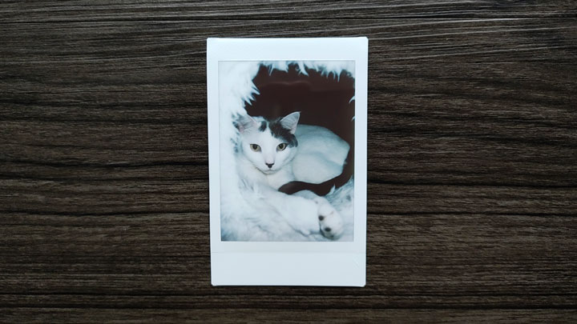

2024.09.16

This is the primary post that covers what I'm up to right now. This can be whatever, but will probably be a short list, like this.
Playing: Elden Ring (Just got the DLC!)
Listening: Busdriver - Perfect Hair
Reading: Cold Hand in Mine - Robert Aickman
Doing: Mourning the end of Cohost
2024.09.16
I will 100% post exclusive cat pics here. This is an old one that I had on hand to test things out. So, uh, stay tuned.
2024.09.15
This is text-only update. Mosts posts here will probably be text only. All these are placeholder right now, just so you understand.
2024.09.14

I'm into cassette tapes again. The last time I regularly used a cassette player was probably in middle school.
2024.09.13
When all the good places to post go away, you have to create your own. This is a total ripoff (with permission) of whack.zone. I plan on posting little updates and occasional thoughts here. You can follow along via the ATOM feed, if you'd like.